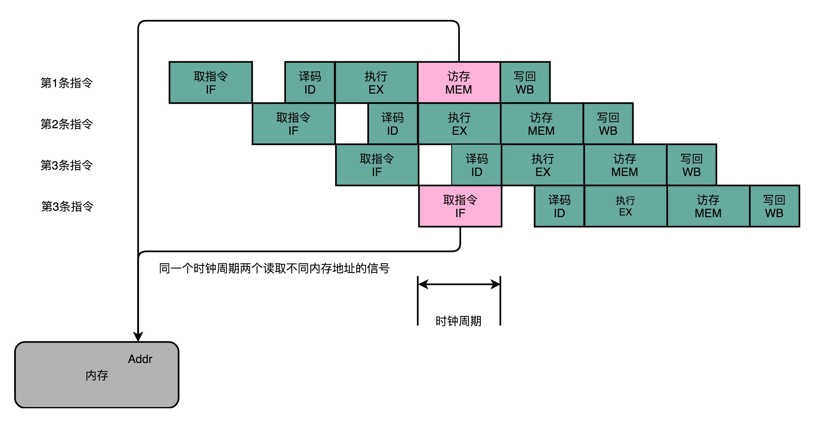
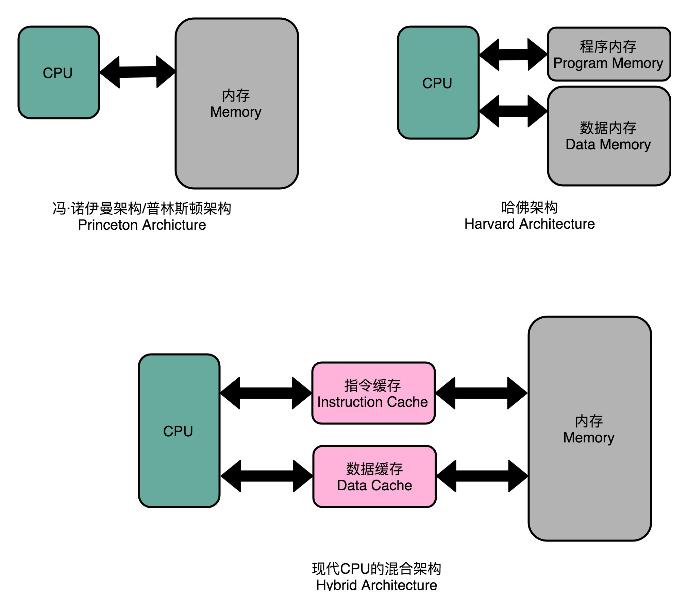
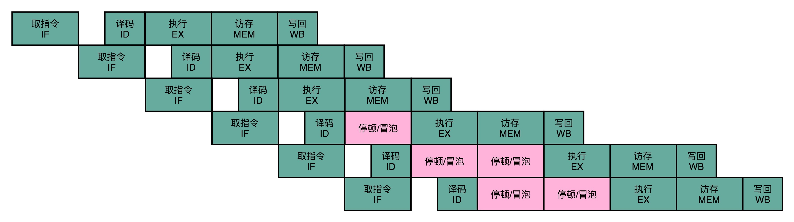
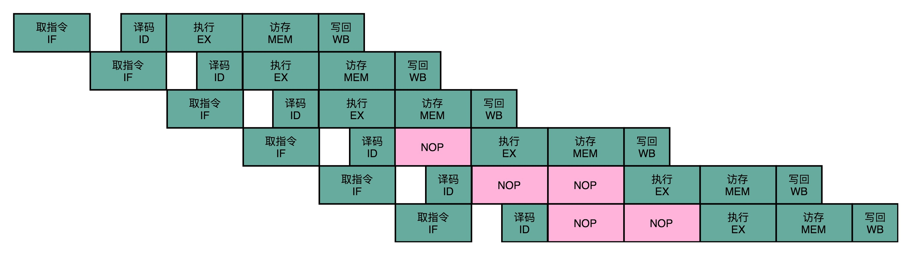

- 00 开篇词 为什么你需要学习计算机组成原理？.md.html
- 01 冯·诺依曼体系结构：计算机组成的金字塔.md.html
- 02 给你一张知识地图，计算机组成原理应该这么学.md.html
- 03 通过你的CPU主频，我们来谈谈“性能”究竟是什么？.md.html
- 04 穿越功耗墙，我们该从哪些方面提升“性能”？.md.html
- 05 计算机指令：让我们试试用纸带编程.md.html
- 06 指令跳转：原来if...else就是goto.md.html
- 07 函数调用：为什么会发生stack overflow？.md.html
- 08 ELF和静态链接：为什么程序无法同时在Linux和Windows下运行？.md.html
- 09 程序装载：“640K内存”真的不够用么？.md.html
- 10 动态链接：程序内部的“共享单车”.md.html
- 11 二进制编码：“手持两把锟斤拷，口中疾呼烫烫烫”？.md.html
- 12 理解电路：从电报机到门电路，我们如何做到“千里传信”？.md.html
- 13 加法器：如何像搭乐高一样搭电路（上）？.md.html
- 14 乘法器：如何像搭乐高一样搭电路（下）？.md.html
- 15 浮点数和定点数（上）：怎么用有限的Bit表示尽可能多的信息？.md.html
- 16 浮点数和定点数（下）：深入理解浮点数到底有什么用？.md.html
- 17 建立数据通路（上）：指令加运算=CPU.md.html
- 18 建立数据通路（中）：指令加运算=CPU.md.html
- 19 建立数据通路（下）：指令加运算=CPU.md.html
- 20 面向流水线的指令设计（上）：一心多用的现代CPU.md.html
- 21 面向流水线的指令设计（下）：奔腾4是怎么失败的？.md.html
- 22 冒险和预测（一）：hazard是“危”也是“机”.md.html
- 23 冒险和预测（二）：流水线里的接力赛.md.html
- 24 冒险和预测（三）：CPU里的“线程池”.md.html
- 25 冒险和预测（四）：今天下雨了，明天还会下雨么？.md.html
- 26 Superscalar和VLIW：如何让CPU的吞吐率超过1？.md.html
- 27 SIMD：如何加速矩阵乘法？.md.html
- 28 异常和中断：程序出错了怎么办？.md.html
- 29 CISC和RISC：为什么手机芯片都是ARM？.md.html
- 30 GPU（上）：为什么玩游戏需要使用GPU？.md.html
- 31 GPU（下）：为什么深度学习需要使用GPU？.md.html
- 32 FPGA、ASIC和TPU（上）：计算机体系结构的黄金时代.md.html
- 33 解读TPU：设计和拆解一块ASIC芯片.md.html
- 34 理解虚拟机：你在云上拿到的计算机是什么样的？.md.html
- 35 存储器层次结构全景：数据存储的大金字塔长什么样？.md.html
- 36 局部性原理：数据库性能跟不上，加个缓存就好了？.md.html
- 37 理解CPU Cache（上）：“4毫秒”究竟值多少钱？.md.html
- 38 高速缓存（下）：你确定你的数据更新了么？.md.html
- 39 MESI协议：如何让多核CPU的高速缓存保持一致？.md.html
- 40 理解内存（上）：虚拟内存和内存保护是什么？.md.html
- 41 理解内存（下）：解析TLB和内存保护.md.html
- 42 总线：计算机内部的高速公路.md.html
- 43 输入输出设备：我们并不是只能用灯泡显示“0”和“1”.md.html
- 44 理解IO_WAIT：IO性能到底是怎么回事儿？.md.html
- 45 机械硬盘：Google早期用过的“黑科技”.md.html
- 46 SSD硬盘（上）：如何完成性能优化的KPI？.md.html
- 47 SSD硬盘（下）：如何完成性能优化的KPI？.md.html
- 48 DMA：为什么Kafka这么快？.md.html
- 49 数据完整性（上）：硬件坏了怎么办？.md.html
- 50 数据完整性（下）：如何还原犯罪现场？.md.html
- 51 分布式计算：如果所有人的大脑都联网会怎样？.md.html
- 52 设计大型DMP系统（上）：MongoDB并不是什么灵丹妙药.md.html
- 53 设计大型DMP系统（下）：SSD拯救了所有的DBA.md.html
- 54 理解Disruptor（上）：带你体会CPU高速缓存的风驰电掣.md.html
- 55 理解Disruptor（下）：不需要换挡和踩刹车的CPU，有多快？.md.html
- 结束语 知也无涯，愿你也享受发现的乐趣.md.html
- 捐赠
22 冒险和预测（一）：hazard是“危”也是“机”
过去两讲，我为你讲解了流水线设计 CPU 所需要的基本概念。接下来，我们一起来看看，要想通过流水线设计来提升 CPU 的吞吐率，我们需要冒哪些风险。
任何一本讲解 CPU 的流水线设计的教科书，都会提到流水线设计需要解决的三大冒险，分别是结构冒险（Structural Hazard）、数据冒险（Data Hazard）以及控制冒险（Control Hazard）。
这三大冒险的名字很有意思，它们都叫作hazard（冒险）。喜欢玩游戏的话，你应该知道一个著名的游戏，生化危机，英文名就叫 Biohazard。的确，hazard 还有一个意思就是“危机”。那为什么在流水线设计里，hazard 没有翻译成“危机”，而是要叫“冒险”呢？
在 CPU 的流水线设计里，固然我们会遇到各种“危险”情况，使得流水线里的下一条指令不能正常运行。但是，我们其实还是通过“抢跑”的方式，“冒险”拿到了一个提升指令吞吐率的机会。流水线架构的 CPU，是我们主动进行的冒险选择。我们期望能够通过冒险带来更高的回报，所以，这不是无奈之下的应对之举，自然也算不上什么危机了。
事实上，对于各种冒险可能造成的问题，我们其实都准备好了应对的方案。这一讲里，我们先从结构冒险和数据冒险说起，一起来看看这些冒险及其对应的应对方案。
结构冒险：为什么工程师都喜欢用机械键盘？
我们先来看一看结构冒险。结构冒险，本质上是一个硬件层面的资源竞争问题，也就是一个硬件电路层面的问题。
CPU 在同一个时钟周期，同时在运行两条计算机指令的不同阶段。但是这两个不同的阶段，可能会用到同样的硬件电路。
最典型的例子就是内存的数据访问。请你看看下面这张示意图，其实就是第 20 讲里对应的 5 级流水线的示意图。
可以看到，在第 1 条指令执行到访存（MEM）阶段的时候，流水线里的第 4 条指令，在执行取指令（Fetch）的操作。访存和取指令，都要进行内存数据的读取。我们的内存，只有一个地址译码器的作为地址输入，那就只能在一个时钟周期里面读取一条数据，没办法同时执行第 1 条指令的读取内存数据和第 4 条指令的读取指令代码。

同一个时钟周期，两个不同指令访问同一个资源
类似的资源冲突，其实你在日常使用计算机的时候也会遇到。最常见的就是薄膜键盘的“锁键”问题。常用的最廉价的薄膜键盘，并不是每一个按键的背后都有一根独立的线路，而是多个键共用一个线路。如果我们在同一时间，按下两个共用一个线路的按键，这两个按键的信号就没办法都传输出去。
这也是为什么，重度键盘用户，都要买贵一点儿的机械键盘或者电容键盘。因为这些键盘的每个按键都有独立的传输线路，可以做到“全键无冲”，这样，无论你是要大量写文章、写程序，还是打游戏，都不会遇到按下了键却没生效的情况。
“全键无冲”这样的资源冲突解决方案，其实本质就是增加资源。同样的方案，我们一样可以用在 CPU 的结构冒险里面。对于访问内存数据和取指令的冲突，一个直观的解决方案就是把我们的内存分成两部分，让它们各有各的地址译码器。这两部分分别是存放指令的程序内存和存放数据的数据内存。
这样把内存拆成两部分的解决方案，在计算机体系结构里叫作哈佛架构（Harvard Architecture），来自哈佛大学设计Mark I 型计算机时候的设计。对应的，我们之前说的冯·诺依曼体系结构，又叫作普林斯顿架构（Princeton Architecture）。从这些名字里，我们可以看到，早年的计算机体系结构的设计，其实产生于美国各个高校之间的竞争中。
不过，我们今天使用的 CPU，仍然是冯·诺依曼体系结构的，并没有把内存拆成程序内存和数据内存这两部分。因为如果那样拆的话，对程序指令和数据需要的内存空间，我们就没有办法根据实际的应用去动态分配了。虽然解决了资源冲突的问题，但是也失去了灵活性。

现代 CPU 架构，借鉴了哈佛架构，在高速缓存层面拆分成指令缓存和数据缓存
不过，借鉴了哈佛结构的思路，现代的 CPU 虽然没有在内存层面进行对应的拆分，却在 CPU 内部的高速缓存部分进行了区分，把高速缓存分成了指令缓存（Instruction Cache）和数据缓存（Data Cache）两部分。
内存的访问速度远比 CPU 的速度要慢，所以现代的 CPU 并不会直接读取主内存。它会从主内存把指令和数据加载到高速缓存中，这样后续的访问都是访问高速缓存。而指令缓存和数据缓存的拆分，使得我们的 CPU 在进行数据访问和取指令的时候，不会再发生资源冲突的问题了。
数据冒险：三种不同的依赖关系
结构冒险是一个硬件层面的问题，我们可以靠增加硬件资源的方式来解决。然而还有很多冒险问题，是程序逻辑层面的事儿。其中，最常见的就是数据冒险。
数据冒险，其实就是同时在执行的多个指令之间，有数据依赖的情况。这些数据依赖，我们可以分成三大类，分别是先写后读（Read After Write，RAW）、先读后写（Write After Read，WAR）和写后再写（Write After Write，WAW）。下面，我们分别看一下这几种情况。
先写后读（Read After Write）
我们先来一起看看先写后读这种情况。这里有一段简单的 C 语言代码编译出来的汇编指令。这段代码简单地定义两个变量 a 和 b，然后计算 a = a + 2。再根据计算出来的结果，计算 b = a + 3。
int main() {
int a = 1;
int b = 2;
a = a + 2;
b = a + 3;
}
int main() {
0: 55 push rbp
1: 48 89 e5 mov rbp,rsp
int a = 1;
4: c7 45 fc 01 00 00 00 mov DWORD PTR [rbp-0x4],0x1
int b = 2;
b: c7 45 f8 02 00 00 00 mov DWORD PTR [rbp-0x8],0x2
a = a + 2;
12: 83 45 fc 02 add DWORD PTR [rbp-0x4],0x2
b = a + 3;
16: 8b 45 fc mov eax,DWORD PTR [rbp-0x4]
19: 83 c0 03 add eax,0x3
1c: 89 45 f8 mov DWORD PTR [rbp-0x8],eax
}
1f: 5d pop rbp
20: c3 ret
你可以看到，在内存地址为 12 的机器码，我们把 0x2 添加到 rbp-0x4 对应的内存地址里面。然后，在紧接着的内存地址为 16 的机器码，我们又要从 rbp-0x4 这个内存地址里面，把数据写入到 eax 这个寄存器里面。
所以，我们需要保证，在内存地址为 16 的指令读取 rbp-0x4 里面的值之前，内存地址 12 的指令写入到 rbp-0x4 的操作必须完成。这就是先写后读所面临的数据依赖。如果这个顺序保证不了，我们的程序就会出错。
这个先写后读的依赖关系，我们一般被称之为数据依赖，也就是 Data Dependency。
先读后写（Write After Read）
我们还会面临的另外一种情况，先读后写。我们小小地修改一下代码，先计算 a = b + a，然后再计算 b = a + b。
int main() {
int a = 1;
int b = 2;
a = b + a;
b = a + b;
}
int main() {
0: 55 push rbp
1: 48 89 e5 mov rbp,rsp
int a = 1;
4: c7 45 fc 01 00 00 00 mov DWORD PTR [rbp-0x4],0x1
int b = 2;
b: c7 45 f8 02 00 00 00 mov DWORD PTR [rbp-0x8],0x2
a = b + a;
12: 8b 45 f8 mov eax,DWORD PTR [rbp-0x8]
15: 01 45 fc add DWORD PTR [rbp-0x4],eax
b = a + b;
18: 8b 45 fc mov eax,DWORD PTR [rbp-0x4]
1b: 01 45 f8 add DWORD PTR [rbp-0x8],eax
}
1e: 5d pop rbp
1f: c3 ret
我们同样看看对应生成的汇编代码。在内存地址为 15 的汇编指令里，我们要把 eax 寄存器里面的值读出来，再加到 rbp-0x4 的内存地址里。接着在内存地址为 18 的汇编指令里，我们要再写入更新 eax 寄存器里面。
如果我们在内存地址 18 的 eax 的写入先完成了，在内存地址为 15 的代码里面取出 eax 才发生，我们的程序计算就会出错。这里，我们同样要保障对于 eax 的先读后写的操作顺序。
这个先读后写的依赖，一般被叫作反依赖，也就是 Anti-Dependency。
写后再写（Write After Write）
我们再次小小地改写上面的代码。这次，我们先设置变量 a = 1，然后再设置变量 a = 2。
int main() {
int a = 1;
a = 2;
}
int main() {
0: 55 push rbp
1: 48 89 e5 mov rbp,rsp
int a = 1;
4: c7 45 fc 01 00 00 00 mov DWORD PTR [rbp-0x4],0x1
a = 2;
b: c7 45 fc 02 00 00 00 mov DWORD PTR [rbp-0x4],0x2
}
在这个情况下，你会看到，内存地址 4 所在的指令和内存地址 b 所在的指令，都是将对应的数据写入到 rbp-0x4 的内存地址里面。如果内存地址 b 的指令在内存地址 4 的指令之后写入。那么这些指令完成之后，rbp-0x4 里的数据就是错误的。这就会导致后续需要使用这个内存地址里的数据指令，没有办法拿到正确的值。所以，我们也需要保障内存地址 4 的指令的写入，在内存地址 b 的指令的写入之前完成。
这个写后再写的依赖，一般被叫作输出依赖，也就是 Output Dependency。
再等等：通过流水线停顿解决数据冒险
除了读之后再进行读，你会发现，对于同一个寄存器或者内存地址的操作，都有明确强制的顺序要求。而这个顺序操作的要求，也为我们使用流水线带来了很大的挑战。因为流水线架构的核心，就是在前一个指令还没有结束的时候，后面的指令就要开始执行。
所以，我们需要有解决这些数据冒险的办法。其中最简单的一个办法，不过也是最笨的一个办法，就是流水线停顿（Pipeline Stall），或者叫流水线冒泡（Pipeline Bubbling）。
流水线停顿的办法很容易理解。如果我们发现了后面执行的指令，会对前面执行的指令有数据层面的依赖关系，那最简单的办法就是“再等等”。我们在进行指令译码的时候，会拿到对应指令所需要访问的寄存器和内存地址。所以，在这个时候，我们能够判断出来，这个指令是否会触发数据冒险。如果会触发数据冒险，我们就可以决定，让整个流水线停顿一个或者多个周期。

我在前面说过，时钟信号会不停地在 0 和 1 之前自动切换。其实，我们并没有办法真的停顿下来。流水线的每一个操作步骤必须要干点儿事情。所以，在实践过程中，我们并不是让流水线停下来，而是在执行后面的操作步骤前面，插入一个 NOP 操作，也就是执行一个其实什么都不干的操作。

这个插入的指令，就好像一个水管（Pipeline）里面，进了一个空的气泡。在水流经过的时候，没有传送水到下一个步骤，而是给了一个什么都没有的空气泡。这也是为什么，我们的流水线停顿，又被叫作流水线冒泡（Pipeline Bubble）的原因。
总结延伸
讲到这里，相信你已经弄明白了什么是结构冒险，什么是数据冒险，以及数据冒险所要保障的三种依赖，也就是数据依赖、反依赖以及输出依赖。
一方面，我们可以通过增加资源来解决结构冒险问题。我们现代的 CPU 的体系结构，其实也是在冯·诺依曼体系结构下，借鉴哈佛结构的一个混合结构的解决方案。我们的内存虽然没有按照功能拆分，但是在高速缓存层面进行了拆分，也就是拆分成指令缓存和数据缓存这样的方式，从硬件层面，使得同一个时钟下对于相同资源的竞争不再发生。
另一方面，我们也可以通过“等待”，也就是插入无效的 NOP 操作的方式，来解决冒险问题。这就是所谓的流水线停顿。不过，流水线停顿这样的解决方案，是以牺牲 CPU 性能为代价的。因为，实际上在最差的情况下，我们的流水线架构的 CPU，又会退化成单指令周期的 CPU 了。
所以，下一讲，我们进一步看看，其他更高级的解决数据冒险的方案，以及控制冒险的解决方案，也就是操作数前推、乱序执行和还有分支预测技术。
推荐阅读
想要进一步理解流水线冒险里数据冒险的相关知识，你可以仔细看一看《计算机组成与设计：硬件 / 软件接口》的第 4.5～4.7 章。
想要了解流水线冒险里面结构冒险的相关知识，你可以去看一看 Coursera 上普林斯顿大学的 Computer Architecture 的Structure Hazard部分。
© 2019 - 2023 Liangliang Lee. Powered by gin and hexo-theme-book.